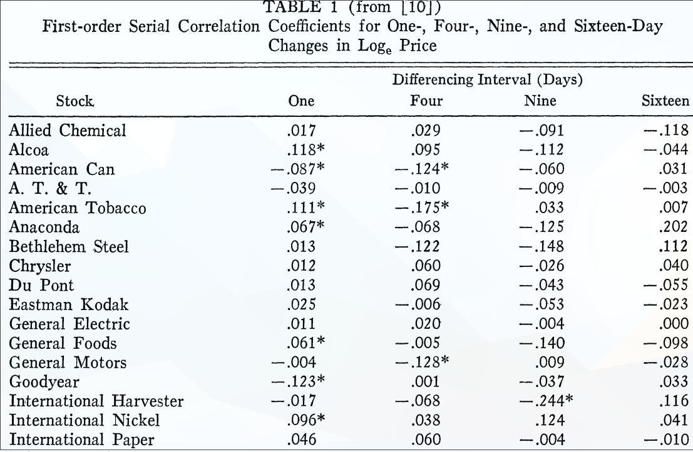
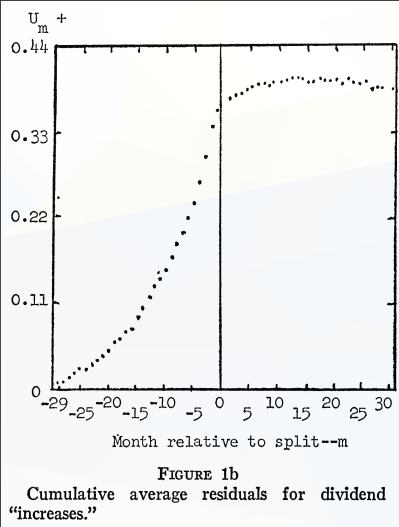
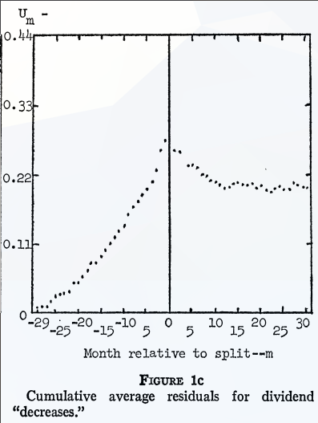
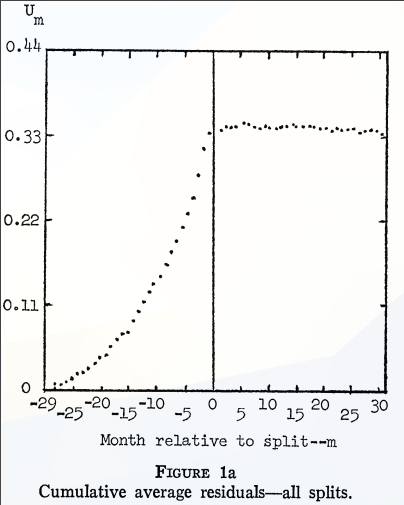

All “expected return theories” can be described as follows. \( E(\tilde p_{j,t+1} | \Phi_{t} ) = [1 + E(\tilde r_{j,t+1}|\Phi_{t})]p_{jt} \)
From the definition of the model we have. \( z_{j,t+1} = r_{j, t+1} - E(\tilde{r}_{j, t+1} | \Phi_t) \)
\( E(\tilde{z}_{j,t+1} | \Phi_t) = 0 \)
Now let
Then is a testable implication from the expected return efficient markets model.
Makes use of the expected return model as well, but we assume that:
\( f(r_{j, t+1} | \Phi_{t}) = f(r_{j, t+1}) \) where \( f \) is a Probability density function. ( and the same probability density function ). ( Past information tells us nothing about the next step )
Random Walk theory can basically be interpreted as a special case of the Fair Game Theory, thus tests of the Random Walk theory are tests of the Fair Game Theory by extension

Figure 1: * Coefficient is twice its computed standard error.
However, Random walk theory fails on some parts
These phenomena do point to the existence of market inefficiencies, but not of the semi-strong form, but of the strong form
These tests are usually done with a certain type of event. In this paper the main type of event introduced were stock splits.

Figure 2: Small increase in cumulative average residuals after dividend increases

Figure 3: Sizeable decreases in cumulative average residuals after dividend decreases

Figure 4: Considered as a whole, the residuals stay largely the same after stock splits